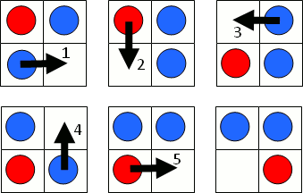

Sliding game
Problem 313
Published on 05 December 2010 at 04:00 am [Server Time]
In a sliding game a counter may slide horizontally or vertically into an empty space. The objective of the game is to move the red counter from the top left corner of a grid to the bottom right corner; the space always starts in the bottom right corner. For example, the following sequence of pictures show how the game can be completed in five moves on a 2 by 2 grid.

Let S(m,n) represent the minimum number of moves to complete the game on an m by n grid. For example, it can be verified that S(5,4) = 25.

There are exactly 5482 grids for which S(m,n) = p2, where p < 100 is prime.
How many grids does S(m,n) = p2, where p < 106 is prime?
Go to back to Problems